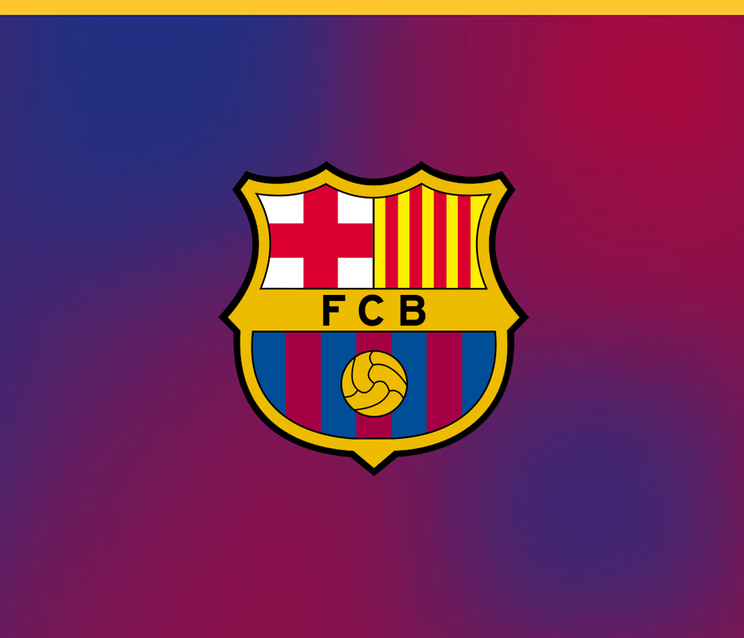
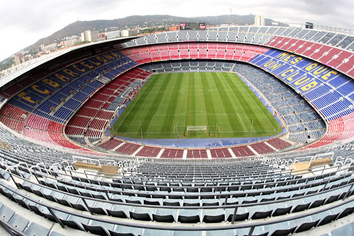

Něco o klubu
-
FC Barcelona (celým názvem: Futbol Club Barcelona, zkráceně Barcelona či Barça) je profesionální španělský fotbalový klub sídlící ve
městě Barcelona, v autonomním společenství Katalánsko. Od sezóny 1929 hraje v Primera División, španělské nejvyšší fotbalové soutěži.
Domácím fotbalovým stadionem je Nou Estadi
del Futbol Club Barcelona známý pod jménem Camp Nou s kapacitou přes 100 tisíc diváků.
-
Kromě fotbalového jsou v klubu i další týmy basketbalový, házenkářský, futsalový a hokeje na kolečkových bruslích. Od svého založení v
roce 1899 má klub heslo: „Més que un club“ (v překladu z katalánštiny: Víc než klub).

Její úspěchy
-
FC Barcelona má na kontě mnohé úspěchy. Barcelona je šestadvacetinásobným mistrem Španělska a
pětinásobným vítězem Ligy mistrů UEFA (v letech 1992, 2006, 2009, 2011, 2015).
Nejvíckrát vyhrála Copa del Rey (30×) a
španělský superpohár Supercopa de España (13×, naposledy v roce 2018). V roce 2009 a 2011 získala trofej Mistrovství světa ve fotbale klubů a mnohé další.
Stadion
